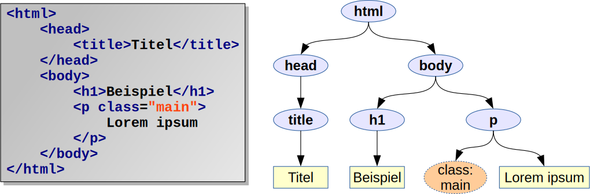

Sicher wartest du schon ganz interessiert darauf, dein neu erworbenes
HTML-Wissen anzuwenden und ansprechende Layouts zu gestalten. Hier
erfährst du daher alles über CSS, was du dafür wissen musst.
<style> innerhalb des
<head> wirkt auf die
gesamte Seite.
Mit dem style-Attribut können
einzelne HTML-Elemente gestyled werden.
<!DOCTYPE html>
<html>
<head>
<meta charset="utf-8">
<title>HTML und CSS in einer Datei</title>
<style>
h1 {
color: #CD0D0D;
text-shadow: 1px 1px 1px grey;
margin: 0;
}
p {
margin-top: 0.5em;
}
</style>
</head>
<body>
<h1>HTML und CSS endlich vereint!</h1>
<p>
Was lange währt, wird endlich gut. Nachdem sich HTML und
CSS nach ihrer Trennung lange Zeit nicht mehr gesehen haben,
haben sie heute endlich wieder zueinander gefunden.
</p>
<p style="color: darkred; font-weight: bold;">
Mit dem style-Attribut kann man gezielt einzelne Elemente
gestalten. Das style-Element wirkt hingegen auf die ganze
Seite und sollte daher eher im head stehen.
</p>
</body>
</html>
CSS-Selektoren und das Document Object Model
Das Document Object Model

Einfache CSS-Selektoren
html body h1 p
Auswahl von Elementen nach ihrem Tag-Namen
#logo
Das Element mit id="logo"
.card
Alle Elemente mit class="card"
input[readonly]
Abfrage beliebiger HTML-Attribute: Suche alle
<input>, die ein
Attribut namens readonly haben
Zusammengesetzte CSS-Selektoren
h1, h2, h3
ODER-Verknüpfung bzw. Vereinigungsmenge mehrerer Selektoren
section.warning
UND-Verknüpfung zweier Selektoren:
Alle <section> mit
class="warning"
article .infobox
Eltern/Kind-Beziehung (transitiv, d.h. alle Nachfahren) bzw. Nachfahre-Beziehung: Suche alle Elemente mit
class="infobox", die irgendwo
innerhalb eines <article>-Elements
stehen
section > h1
Eltern/Kind-Beziehung (nicht transitiv, d.h. nur direkte Nachfahren): Suche alle
<h1>, deren direktes Elternelement
ein <section> ist
Legt die Schriftart für ein Element und seine Unterelemente fest.
Werden mehrere Schriftarten angegeben, wird die erste gefundene verwendet.
Immer vorhandene Schriften sind: serif, sans-serif,
monospace, fantasy.
font-size: 12pt;
Legt die Schriftgröße eines Elements fest. Erlaubt sind entweder numerische Werte oder
folgende Konstanten: small, x-small, large,
x-large, …
font-weight: bold;
Legt fest, wie kräftig die Schrift erscheint. bold ist der normale Fettdruck.
Es gibt aber auch normal, bolder und lighter.
color: crimson;
Ändert die Schriftfarbe des aktuellen Elements. Erlaubt sind alle Farbwerte, wie
auf der nächsten Folie beschrieben.
Ändert die Hintergrundfarbe eines Elements. Erlaubt sind natürlich
alle Farbwerte aus der nächsten Folie. Mit rgba() lassen
sich damit auch halbdurchsichtige Hintergründe definieren.
background-image: url(bg.jpg);
Legt ein Hintergrundbild fest, das standardmäßig so oft wiederholt
wird, bis das Element komplett damit bedeckt ist. Siehe Folie 8
für weitere Möglichkeiten.
html {
background-color: #F0F0F0;
}
header > nav {
background-color: rgb(4, 192, 242);
}
.black {
background-image: url(black_pattern.jpg);
}
Dies sind die bekannten Voreinstellungen des Browsers, so wie sie im
HTML-Folienatz erklärt wurden.
display: inline-block;
Eine Mischung aus Inline- und Blockelement. Im Prinzip handelt es sich
beim betroffenen Element weiterhin um ein Blockelement, das sich in Teilen
aber wie ein Inline verhält. Unter anderem passen sich Breite und Höhe komplett
dem Inhalt an und es kann in derselben Zeile stehen wie weitere
inline-block-Elemente
Legen die Breite und Höhe der ausgewählten Elemente fest. width
und height legen eine fixe Größe fest und können daher dazu führen,
dass zu viel Inhalt aus den Elementen herausragt.
min-width und min-height
erlauben dem Element hingegen, mit seinem Inhalt zu wachsen.
overflow: hidden;
Sorgt dafür, dass zu großer Inhalt nicht aus dem Element herausläuft, sondern abgeschnitten wird.
Sorgt dafür, dass ein gleichmäßiger Abstand von 1em um die betroffenen
Elemente frei bleibt. Achtung: Die margins
zweier benachbarter Elemente addieren sich auf (siehe Skizze).
Erlaubt es, die vier Abstände um ein Element herum einzeln zu definieren.
Die Kurzform in der ersten Zeile wird im Uhrzeigersinn gelesen: Oben, rechts, unten, links.
Im Prinzip dasselbe wie margin, nur dass
es nicht um den Platz um das Element herum geht, sondern um den inneren
Abstand vom Rand des Elements zu seinem Inhalt.
Verschiedene Optionen zur Definition der Rahmendicke, Rahmenart und Rahmenfarbe.
border-width, border-style
und border-color können alle vier oder nur eine Seite beeinflussen.
Für letzteres muss nach border- eine der vier Richtungen angegeben
werden: top; right,
bottom, left.
Früher waren alle HTML-Elemente eckig wie Toastbrot. 🍞 Heute können sie auch
abgerundete Ecken besitzen.
box-shadow: 2px 2px 4px rgba(0,0,0, 0.5);
Zeichnet einen weichen Schatten um das Element herum. Diese Anweisung ist
der Schlüssel zum Google Material-Design. Die vier Werte bedeuten: X-Richtung,
Y-Richtung, Weichzeichnung und Farbe.
d) … alle Elemente der Klasse „active” aus, die sich innerhalb eines
<nav>-Elements befinden?
nav .active
nav > .active
nav.active
nav #active
Aufgabe 1.2: Mit welcher CSS-Anweisung kann man …
a) … die Schriftart festlegen?
font-size
font-family
font-weight
text-decoration
b) … ein Hintergrundbild setzen?
background-color
background-image
background-size
background
c) … den Innenabstand vom Rahmen eines Elements zu seinem Inhalt definieren?
padding
margin
border
d) … einen Schatten definieren?
border-radius
text-decoration
text-shadow
box-shadow
Lösung: Aufgabe 1.1: 4, 3, 2, 1 und 2; Aufgabe 1.2: 2, 2 und 4, 1, 3 und 4
Aufgabe 2: Dein erstes Stylesheet
Kopiere den folgenden Quellcode in eine neue HTML-Datei und passe das
Stylesheet gemäß der Beschreibung an. Das Ergebnis sollte ungefähr wie
auf dem dritten Reiter aussehen.
Ordnet man einem beliebigen Element ein Hintergrundbild zu, wird das Bild
standardmäßig wie die Kacheln im Bad so oft wiederholt, bis sie das ganze
Element ausfüllen. In der Regel ordnet man es daher dem
<html> oder <body>
zu, um die ganze Seite damit auszufüllen.
Vor allem in den frühen Jahren des Web hat man diesen Effekt häufig gesehen.
Heute wirkt es jedoch oft altbacken und wird daher nicht mehr so oft angewendet.
Beispiel
Meine erste Webseite
Und sie hat sogar einen gekachelten Hintergrund, so wie früher in den 1990ern.
Naja, modern ist das nicht. Heute bevorzugt man eher einfarbige Hintergründe.
html {
background-image: url(foto.jpg);
background-repeat: no-repeat;
background-position: center center;
background-size: cover;
}
Die obigen CSS-Anweisungen zeigen, wie man der Seite ein Hintergrundbild zuordnen
kann, das immer die volle Größe ausfüllt. Da man nicht wissen kann, welche Größe
des Browserfenster später haben wird, wird um die Mitte herum alles abgeschnitten,
was nicht in das Fenster passt. Das Bild wird dafür aber immer so gestreckt, dass
es das ganze Fenster ausfüllt ohne zu verzerren.
Dieser Effekt war in den 2010ern eine Zeit lang modern, tritt inzwischen aber
nicht mehr ganz so oft auf. Wichtig ist, dass man trotz des Bildes die Schrift
noch gut lesen kann.
Ordnet man die Hintergrundbilder nicht der gesamten Seite sondern einzelnen
untereinander stehenden Elementen zu und verwendet man dabei noch die Anweisung
background-attachment: fixed;, entsteht ein
interessanter Effekt. Beim Scrollen bleibt ein Teil des Hintergrunds stehen und
ein anderer Teil schiebt sich quasi darüber.
Dieser Effekt, der ebenfalls seit ca. 2010 sehr beliebt ist, nennt sich „Parallax
Scrolling”. Er eignet sich am besten für One-Pager, also Webseiten, die nur aus
einer langen, nach unten scrollenden Seite bestehen. Manche Webdesigner haben
den Effekt mit JavaScript perfektioniert und auf die Spitze getrieben. Das Grundgerüst
ist aber ziemlich einfach.
Hinweis: Auf mobilen Geräten funktioniert der Effekt ziemlich schlecht,
da diese, um Akku zu sparen, verschiedene Optimierungen beim Scrollen anwenden,
die mit background-attachment: fixed; nicht
harmonieren. Man sollte den Effekt daher durch ein „Media Query” auf nicht-mobile
Geräte beschränken.
Legt fest, welche Eigenschaften animiert werden sollen und wie lange
die Animation jeweils dauern soll. Mehrere Animationen können durch
Komma getrennt definiert werden. Abgespielt werden den Animationen,
wenn sich die jeweilige Eigenschaft verändert. Hierfür braucht man
eigentlich JavaScript, einfache Mausereignisse gehen aber auch ohne.
Keyframe-Animationen werden mit @keyframe definiert,
wobei der Animation ein eindeutiger Namen gegeben werden muss. Die einzelnen Zeitpunkte
innerhalb der Animation werden in Prozent von 0% bis 100% angegeben. Wie lange die
Animation dauert und wie schnell die Zeitpunkte erreicht sind, hängt von der Geschwindigkeit
ab, die man ihr später gibt.
Über die animation-Anweisung und ihre Ableger wird
eine benannte Keyframe-Animation an ein Element gebunden. Die Animation fängt sofort an
zu laufen und muss nicht zuvor aktiviert werden.
 Das richtige Klavier finden
Das richtige Klavier finden